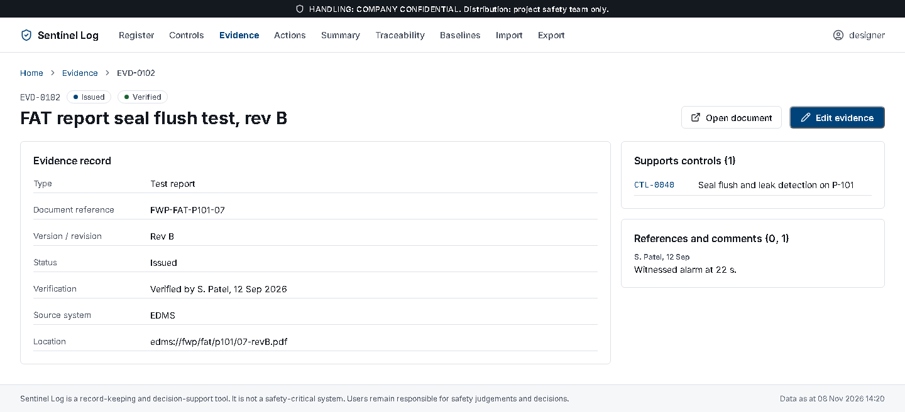

UC-6: Add substantiation and evidence references. Actor: Hazard owner
Main flow
- editor opens UCTL-0002 substantiation section; page shows substantiation text (req-13).
- editor opens the evidence section on UCTL-0002; UEVD-0001 renders with verified verification status (req-14).
- editor opens UEVD-0001; detail page lists UCTL-0002 under supporting controls so the cross-link reads both ways (req-14).
- editor opens UEVD-0002 on the evidence list; record shows rejected verification status with its own document reference (req-14).
- editor opens the external reference on UCTL-0002; reference shows system name and reference id as stored text (req-15).
Stills
